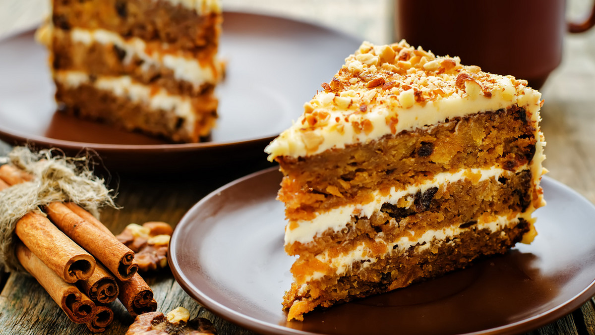
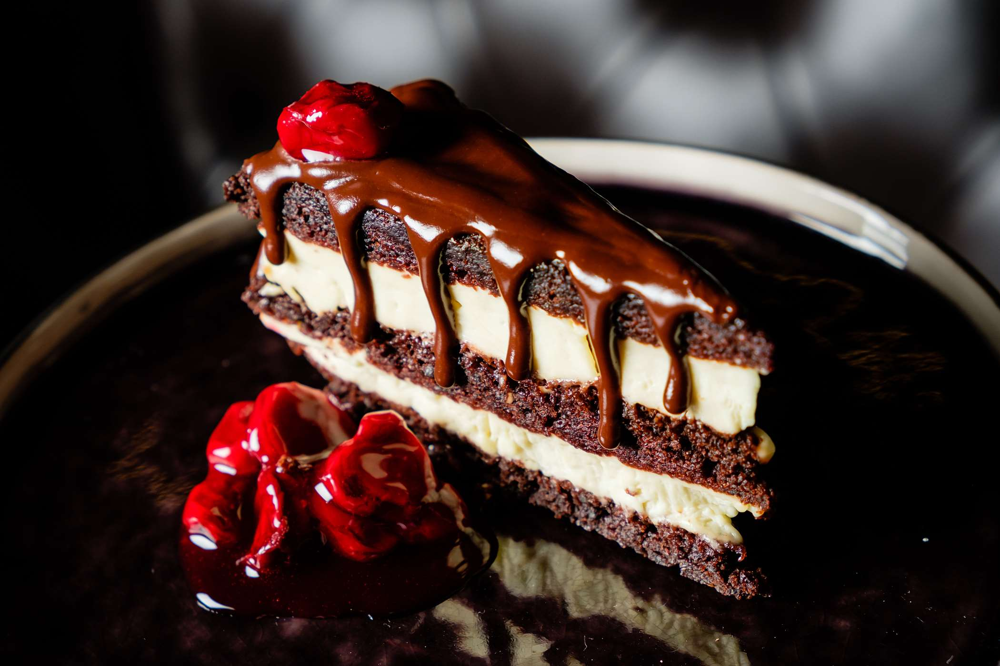

Cukiernia Malinowa Chmurka to firma z wieloletnimi tradycjami, zatrudniająca wykształconych
cukierników szkolonych od podstaw przez Mistrzów.
Pracownia powstała z pasji do tworzenia niezapomnianych, rozpieszczających
podniebienia naturalnych wyrobów cukierniczych.
Celem nadrzędnym jest zachwycenie Klientów innowacyjnymi propozycjami
z jednoczesnym zachowaniem wysokich standardów jakości i świeżości surowców.
Zespół cukierników nieprzerwalnie od 01.06.2010 roku poza tradycyjnymi wypiekami
specjalizuje się w tworzeniu artystycznych tortów z „duszą”.
Cukiernia dysponuje zapleczem sklepów firmowych, które zapraszają nie tylko na szeroki
asortyment ciast i ciasteczek, ale można też liczyć na profesjonalne doradztwo podczas
zamawiania tortów na różne okoliczności.
Cukiernia Malinowa Chmurka zaprasza do swojego słodkiego i pięknie udekorowanego świata
wypełnionego ciastami, ciasteczkami i torcikami, które mają na celu uprzyjemnić Państwu
każdą ważną chwilę.

|